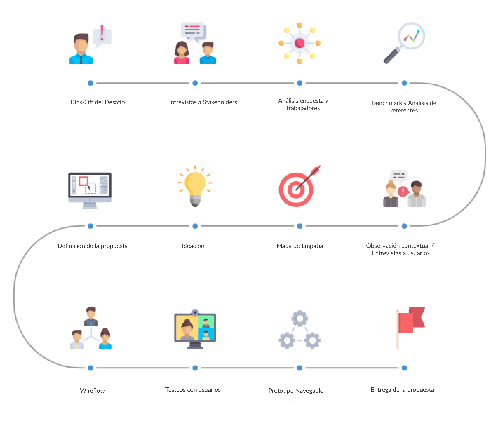
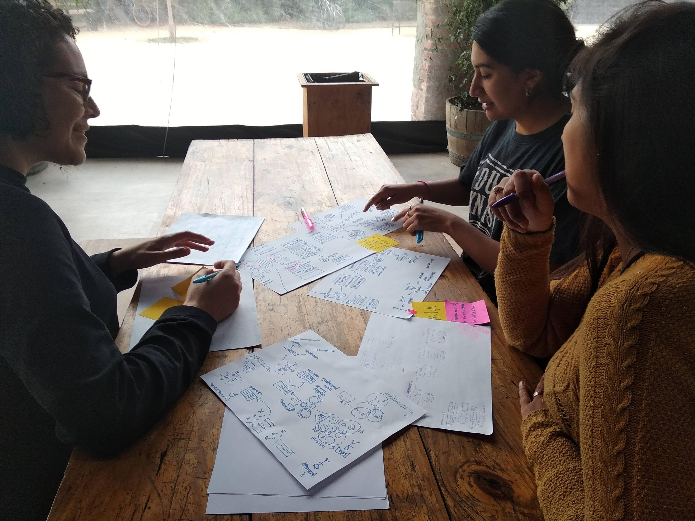

Como parte del Bootcamp de Laboratoria Globant nos presentó el siguiente desafío UX:
“Generar espacios saludables para los empleados a través de una plataforma digital”.
Abordamos el problema desde lo más amplio para llegar al producto de alta fidelidad. Aqui trabajamos con stakeholders, diseñadores UX, encargados de RHH, trabajadores de distintas sedes y visiones, así como la oportunidad de entrevistar a muchos Globers, lo que nos permitiío conocer la cultura desde dentro, empatizar con sus necesidades y plantear una solución acorde a los hallazgos.
Como parte de la confidencialidad de los datos no podemos compartir detalles específicos del proyecto. Si tienes dudas acerca de esta experiencia, puedes enviarnos un correo!
tiempo
3 semanas
Trabajo colaborativo
3 UX Designers
Mi rol
Testeo de usuarios, entrevistas, desarrollo de propuestas
Herramientas
Figma, lápiz y paple, sticky notes
Proceso de Investigación

Aprendizajes
Son muchos los aprendizajes en este proyecto, tanto a nivel de equipo de trabajo, del desafío en sí, como del trabajo con clientes del área tech:
Aprender cómo abordar un desafío y diseñar un flujo completo de principio a fin. En este proyecto, tuvimos la oportunidad de generar una solución desde cero, a partir de la investigación y testeos con usuarios. Lo cual fue un tremendo aprendizaje que nos ayuda a ver los distintos pasos del desarrollo de un producto UX.
Trabajar con clientes líderes del área tech. Este fue un aspecto muy motivante a la vez que un desafío ya que sabemos que conocen las últimas tendencias respecto a la usabilidad e innovaciones.
Navegar en la ambigüedad, y seguir adelante sin conocer todas las respuestas. Comenzamos el desafío sin saber hacia dónde nos llevaría, comenzó siendo un desafío muy amplio, pero a partir de la investigación este se fue acotando hasta realizar una propuesta más acotada y que creemos puede ser de mucha utilidad a los usuarios a los que va dirigido.
Priorizar lo importante. Durante el proceso de ideación, surgieron muchos aprendizajes e ideas a incorporar en la solución, sin embargo fue necesario priorizar considerando los tiempos disponibles para realizar la propuesta considerando además aquellos aspectos que otorgan más valor.
Foto del equipo UX en pleno trabajo
